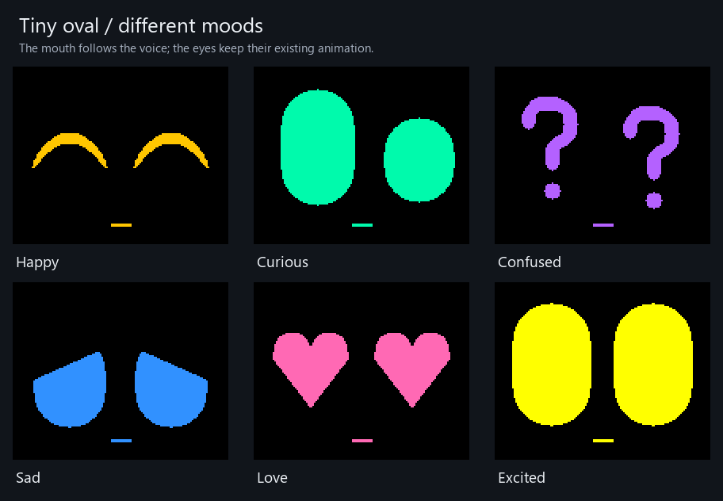
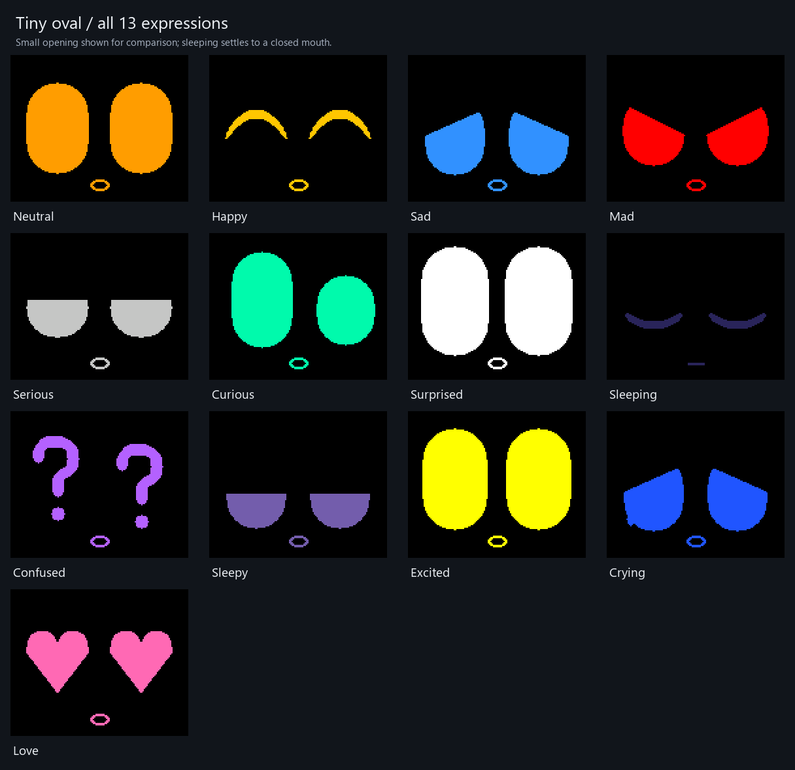

Three small mouth styles, with Digit’s existing eyes and colors.
Press play to hear saved Digit voice sounds. The mouth opens with their volume and closes in the gaps.


Desktop concept previews only. Live speech synchronization and robot installation have not been performed.